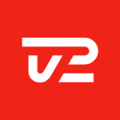
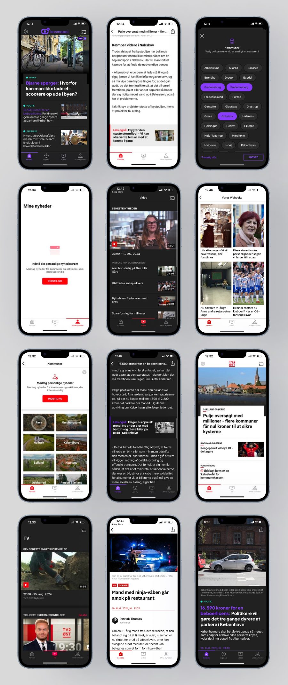

TV2 Regionerne.
All the TV 2 regions run on one white-label app today. At the product design agency Shape I was the leading UX designer in pitching and laying out its UX.
Product Designer at Shape, 2019.
One app, every region
The app is designed with accessibility in mind and adapts to the user’s preferences with native dark mode, and takes into account every region’s visual identity including fonts, colors, etc.
